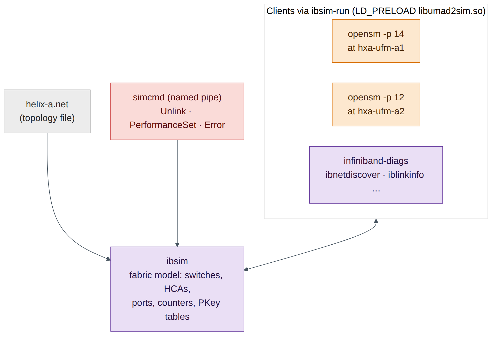
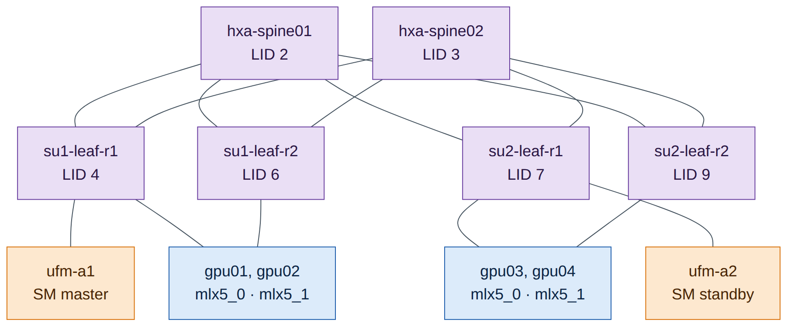
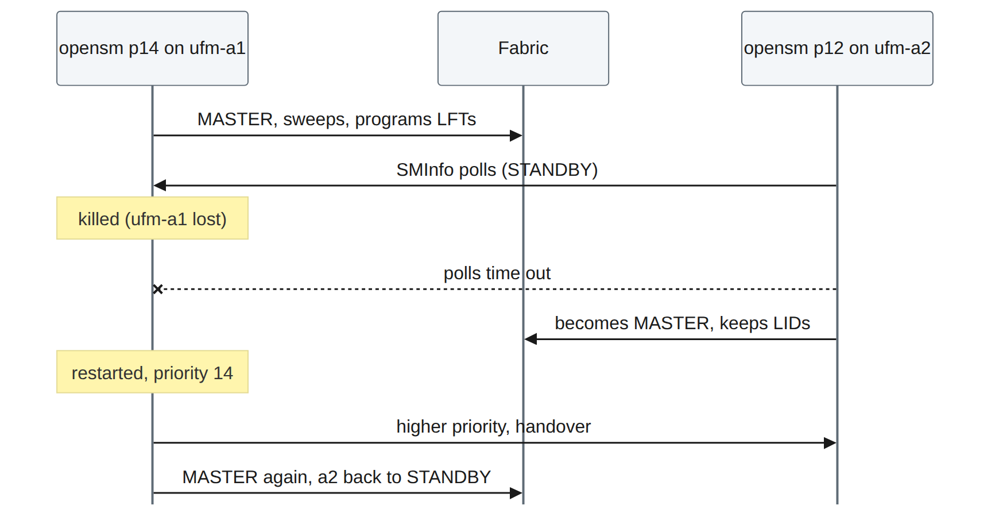
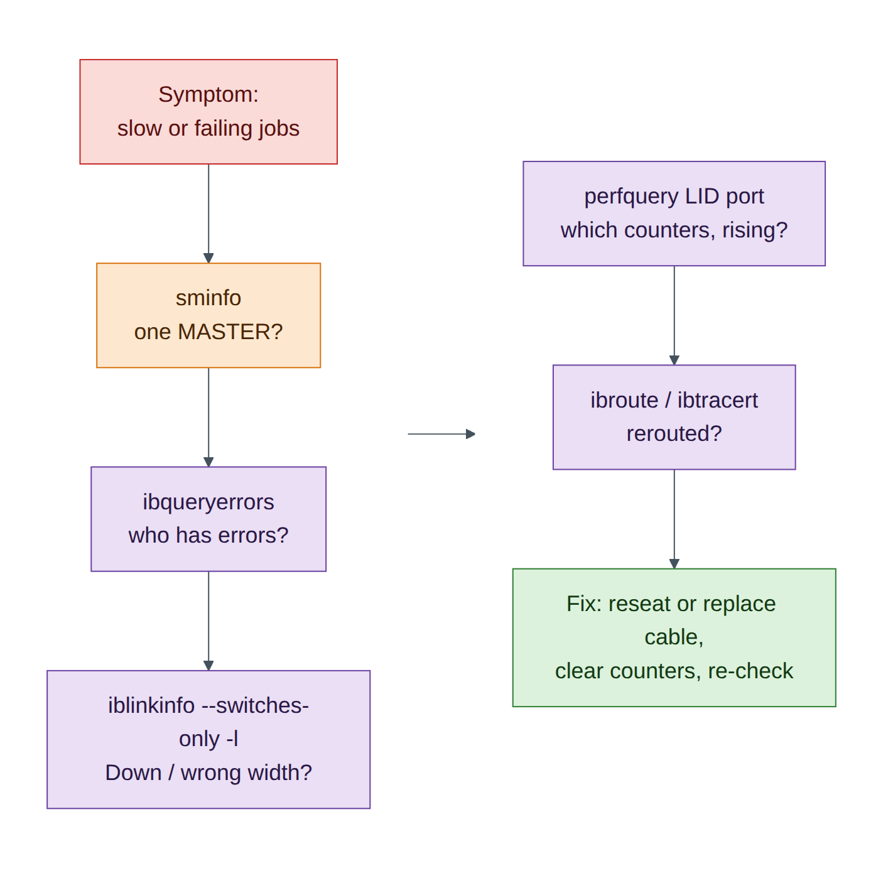

Lab 8 — An InfiniBand Fabric with ibsim: SM, HA, Partitions and Diagnostics¶
Companion to the NCP-AIN Certification Guide
This free lab is part of the hands-on companion to NCP-AIN Certification Guide by Vakeesan Thevarajah (Cloudfoxy Ltd). The book explains the theory, design choices and hardware behaviour behind every step.
Lab at a glance¶
| Book chapters | 11 (IB architecture and SM), 12 (provisioning and HA), 13 (PKeys), 14 (routing), 15 and 20 (monitoring and health), 17 (diagnostic toolkit) |
| Exam objectives | 3.1, 3.2, 3.3, 3.4, 5.4, 5.5 |
| Time | 90 minutes |
| Air resources | hxa-ibsim only (2 vCPU, 2 GiB); the rest of the simulation can stay running or be stopped |
| Prerequisites | Lab 0 |
Objectives¶
- Build a small Helix-A InfiniBand fabric in the ibsim simulator.
- Run OpenSM, watch it discover the fabric, assign LIDs and program forwarding tables.
- Use the Chapter 17 toolkit:
sminfo,ibnodes,ibswitches,ibhosts,ibnetdiscover,iblinkinfo,smpquery,ibroute,ibtracert,perfquery,ibqueryerrors,saquery. - Run a master and a standby SM, then fail over and fail back (Chapter 12).
- Create partitions (PKeys) for the RESEARCH, PRODUCTION and SHARED tenants (Chapter 13) and prove membership.
- Inject symbol errors and a failed link, and find them the way you would on a real fabric (Chapters 15, 17 and 20).
Background¶
DSX Air cannot simulate InfiniBand switches, so this lab uses ibsim, the open-source InfiniBand fabric simulator from the linux-rdma project. ibsim models switches and HCAs from a text topology file in the same format that ibnetdiscover prints. The real OpenSM and the real infiniband-diags tools run against it through a small library, libumad2sim.so, that redirects their management datagrams (MADs) from the kernel to the simulator. The helper ibsim-run <command> loads that library for you.
What you practise is therefore genuine: the same SM state machine, LID assignment, PKey tables, forwarding tables and diagnostic tools that run on a Quantum fabric. The simulator has limits: links report SDR speed (2.5 Gb/s per lane) rather than NDR, sysfs-based tools such as ibstat and ibv_devinfo don't see simulated HCAs, and NVIDIA-specific tools (ibdiagnet, UFM, SHARP, the ar_updn routing engine) aren't part of it.

The simulated Helix-A fabric¶
The fabric is a two-SU slice of Helix-A: two spines, four rail leaves, four GPU nodes with two HCAs each (one per rail), and the two UFM servers of the HA pair. The first node in the file, hxa-ufm-a1, is where ibsim attaches clients by default, so that is where the master SM runs, just as UFM hosts the SM on Helix-A.

Step-by-step¶
Task 1 — Install the simulator and tools on hxa-ibsim¶
-
From the oob-mgmt-server, log in and become root. Running everything as root keeps the simulator and its clients under the same user, which ibsim needs.
-
Install ibsim, OpenSM and the diagnostic tools. They are in Ubuntu 24.04's
universerepository and download through the oob-mgmt-server's NAT gateway.
Checkpoint
-
which ibsim opensm ibnetdiscoverprints three paths.
Task 2 — Create the fabric file and start the simulator¶
-
Create a working directory and the topology file. Download
helix-a.netfrom the companion site, or type it in from Appendix B. -
Each node record is a header line (
Switch 36 "name"orHca 1 "name") followed by one line per connected port:[local-port] "remote-node"[remote-port]. Look at one leaf: -
Start the simulator in the background. Its console reads commands from a named pipe,
simcmd, so you can change the fabric later without a second terminal.root@hxa-ibsim:~/ibsim# mkfifo simcmd root@hxa-ibsim:~/ibsim# nohup sh -c 'tail -f ~/ibsim/simcmd | ibsim -s ~/ibsim/helix-a.net' > ~/ibsim/sim.log 2>&1 & root@hxa-ibsim:~/ibsim# echo 'Help' > simcmd ; sleep 1 ; grep -A6 'Commands:' sim.log sim> Commands: !<filename> - run commands from the file Start network Dump ["nodeid"] : dump node information in network Route <from-lid> <to-lid> Link "nodeid"[port] "remoteid"[port] ReLink "nodeid" : restore previously unconnected link(s) of the nodeField note
sim.logalso contains manyibwarn: parse_port_connection_data: cannot parse remote lidlines. They are harmless: the parser expects the optional LID fields that a realibnetdiscoverdump contains.
Task 3 — Start the Subnet Manager and discover the fabric¶
-
Start OpenSM on
hxa-ufm-a1with priority 14 (Chapter 12: the preferred master gets the highest priority, 0–15). -
Confirm which SM is master:
-
Inventory the fabric (Chapter 17, section 17.3):
root@hxa-ibsim:~/ibsim# alias ib='ibsim-run' # saves typing; tools print ibwarn noise on stderr root@hxa-ibsim:~/ibsim# ib ibswitches 2>/dev/null Switch : 0x0000000000200005 ports 36 "hxa-su2-leaf-r2" base port 0 lid 9 lmc 0 Switch : 0x0000000000200004 ports 36 "hxa-su2-leaf-r1" base port 0 lid 7 lmc 0 Switch : 0x0000000000200003 ports 36 "hxa-su1-leaf-r2" base port 0 lid 6 lmc 0 Switch : 0x0000000000200001 ports 36 "hxa-spine02" base port 0 lid 3 lmc 0 Switch : 0x0000000000200000 ports 36 "hxa-spine01" base port 0 lid 2 lmc 0 Switch : 0x0000000000200002 ports 36 "hxa-su1-leaf-r1" base port 0 lid 4 lmc 0 root@hxa-ibsim:~/ibsim# ib ibhosts 2>/dev/null | wc -l 10 -
Build the LID and port-GUID map you'll need for partitions.
ibnetdiscover -pprints one line per port:root@hxa-ibsim:~/ibsim# ib ibnetdiscover -p 2>/dev/null | grep '^CA' | grep gpu | sort -k2 -n CA 5 1 0x0000000000100003 4x SDR - SW 4 1 0x0000000000200002 ( 'hxa-gpu01 mlx5_0' - 'hxa-su1-leaf-r1' ) CA 8 1 0x0000000000100005 4x SDR - SW 6 1 0x0000000000200003 ( 'hxa-gpu01 mlx5_1' - 'hxa-su1-leaf-r2' ) CA 10 1 0x0000000000100007 4x SDR - SW 4 2 0x0000000000200002 ( 'hxa-gpu02 mlx5_0' - 'hxa-su1-leaf-r1' ) CA 11 1 0x0000000000100009 4x SDR - SW 6 2 0x0000000000200003 ( 'hxa-gpu02 mlx5_1' - 'hxa-su1-leaf-r2' ) CA 12 1 0x000000000010000b 4x SDR - SW 7 1 0x0000000000200004 ( 'hxa-gpu03 mlx5_0' - 'hxa-su2-leaf-r1' ) CA 13 1 0x000000000010000d 4x SDR - SW 9 1 0x0000000000200005 ( 'hxa-gpu03 mlx5_1' - 'hxa-su2-leaf-r2' ) CA 14 1 0x000000000010000f 4x SDR - SW 7 2 0x0000000000200004 ( 'hxa-gpu04 mlx5_0' - 'hxa-su2-leaf-r1' ) CA 15 1 0x0000000000100011 4x SDR - SW 9 2 0x0000000000200005 ( 'hxa-gpu04 mlx5_1' - 'hxa-su2-leaf-r2' )
Read each line as: node type, LID, port number, port GUID, width and speed, then the peer's type, LID, port and GUID, then the two node descriptions. Record the table below; the rest of the lab uses it.
| HCA | LID | Port GUID |
|---|---|---|
| hxa-gpu01 mlx5_0 | 5 | 0x0000000000100003 |
| hxa-gpu02 mlx5_0 | 10 | 0x0000000000100007 |
| hxa-gpu03 mlx5_0 | 12 | 0x000000000010000b |
| hxa-gpu04 mlx5_0 | 14 | 0x000000000010000f |
Exam trap
Node GUID and port GUID are different numbers. ibhosts shows the node GUID (…002 for gpu01 mlx5_0); partitions and SA records use the port GUID (…003). Mixing them up is the most common reason a partition "doesn't work".
Checkpoint
-
sminfoshows a MASTER at LID 1 with priority 14. - 6 switches and 10 CAs discovered; your LID table matches.
Task 4 — Read ports, links and forwarding tables¶
-
Check one HCA port the way Chapter 11 describes the port state machine:
root@hxa-ibsim:~/ibsim# ib smpquery portinfo 5 1 2>/dev/null | grep -E 'SMLid|LinkState|PhysLinkState|LinkWidthActive|LinkSpeedActive' SMLid:...........................1 LinkWidthActive:.................4X LinkState:.......................Active PhysLinkState:...................LinkUp LinkSpeedActive:.................2.5 GbpsActive+LinkUp+ 4X is healthy. (A real NDR port shows 106.25 Gbps per lane; the simulator models SDR.) -
See every link from the switches' point of view (Chapter 17,
iblinkinfo):root@hxa-ibsim:~/ibsim# ib iblinkinfo --switches-only -l 2>/dev/null | grep 'hxa-su1-leaf-r1' | head -4 0x0000000000200002 " hxa-su1-leaf-r1" 4 1[ ] ==( 4X 2.5 Gbps Active/ LinkUp)==> 0x0000000000100002 5 1[ ] "hxa-gpu01 mlx5_0" (Could be 12X Could be 10.0 Gbps) 0x0000000000200002 " hxa-su1-leaf-r1" 4 2[ ] ==( 4X 2.5 Gbps Active/ LinkUp)==> 0x0000000000100006 10 1[ ] "hxa-gpu02 mlx5_0" (Could be 12X Could be 10.0 Gbps) -
Dump a leaf's linear forwarding table (LFT). The SM spreads destinations across both uplinks (33 and 34):
root@hxa-ibsim:~/ibsim# ib ibroute 4 2>/dev/null | head -12 Unicast lids [0x0-0x10] of switch Lid 4 guid 0x0000000000200002 (hxa-su1-leaf-r1): Lid Out Destination Port Info 0x0001 030 : (Channel Adapter portguid 0x0000000000100001: 'hxa-ufm-a1 mlx5_0') 0x0002 033 : (Switch portguid 0x0000000000200000: 'hxa-spine01') 0x0003 034 : (Switch portguid 0x0000000000200001: 'hxa-spine02') 0x0004 000 : (Switch portguid 0x0000000000200002: 'hxa-su1-leaf-r1') 0x0005 001 : (Channel Adapter portguid 0x0000000000100003: 'hxa-gpu01 mlx5_0') 0x0006 034 : (Switch portguid 0x0000000000200003: 'hxa-su1-leaf-r2') 0x0007 034 : (Switch portguid 0x0000000000200004: 'hxa-su2-leaf-r1') 0x0008 034 : (Channel Adapter portguid 0x0000000000100005: 'hxa-gpu01 mlx5_1') -
Trace the path from gpu01 rail 1 (LID 5) to gpu03 rail 1 (LID 12), which sits in the other SU:
root@hxa-ibsim:~/ibsim# ib ibtracert 5 12 2>/dev/null From ca {0x0000000000100002} portnum 1 lid 5-5 "hxa-gpu01 mlx5_0" [1] -> switch port {0x0000000000200002}[1] lid 4-4 "hxa-su1-leaf-r1" [33] -> switch port {0x0000000000200000}[1] lid 2-2 "hxa-spine01" [3] -> switch port {0x0000000000200004}[33] lid 7-7 "hxa-su2-leaf-r1" [1] -> ca port {0x000000000010000b}[1] lid 12-12 "hxa-gpu03 mlx5_0" To ca {0x000000000010000a} portnum 1 lid 12-12 "hxa-gpu03 mlx5_0"
Leaf → spine → leaf: exactly the rail-optimised path of Chapter 2. Traffic between two HCAs on the same rail leaf never leaves that leaf.
Check your understanding
Run ib ibtracert 5 8 (gpu01 rail 1 to gpu01 rail 2). Why does it cross a spine even though both HCAs are in the same server? (Answer: rail 1 and rail 2 are separate leaves; in a rail-optimised fabric, cross-rail traffic goes leaf → spine → leaf. In a real node NCCL keeps it on NVLink instead.)
-
Read the SM's routing choice from its log. OpenSM's default engine is minhop; NVIDIA's OpenSM in UFM adds
ar_updnfor adaptive routing (Chapter 14), which this open-source build doesn't include.
Checkpoint
- You can explain each field of an
iblinkinfoline and anibrouteentry. - You traced a cross-SU path leaf → spine → leaf.
Task 5 — Master and standby SM; failover and failback¶
-
Start a second OpenSM on
hxa-ufm-a2with a lower priority (12). TheSIM_HOSTvariable tells umad2sim which simulated node to attach to. -
Fail the master by stopping it (the equivalent of losing
ufm-a1): -
Watch the standby. It polls the master and takes over after several missed polls; in the simulator this takes about a minute.
root@hxa-ibsim:~/ibsim# sleep 90 ; grep 'state' osm-a2.out | tail -1 Entering MASTER state root@hxa-ibsim:~/ibsim# ib sminfo 2>/dev/null sminfo: sm lid 16 sm guid 0x100013, activity count 788 priority 12 state 3 SMINFO_MASTER(The activity count will differ.) The master is now LID 16,
hxa-ufm-a2. Existing LIDs and forwarding tables were kept: a failover does not renumber the fabric.

-
Fail back: restart the priority-14 SM on
hxa-ufm-a1. Because it has the higher priority, it negotiates mastership back.root@hxa-ibsim:~/ibsim# nohup ibsim-run opensm -p 14 -f ~/ibsim/opensm-a1.log > osm-a1.out 2>&1 & root@hxa-ibsim:~/ibsim# sleep 45 ; ib sminfo 2>/dev/null sminfo: sm lid 1 sm guid 0x100001, activity count 483 priority 14 state 3 SMINFO_MASTERExam focus
Highest priority wins; on equal priority the lowest port GUID wins. In UFM HA (Chapter 12) the SM follows the UFM master through Pacemaker, so you don't normally run two independent SMs by hand. This task shows the SM-level behaviour underneath.
Checkpoint
- You saw STANDBY → MASTER on ufm-a2 after the master failed.
- The priority-14 SM took mastership back.
Task 6 — Partitions (PKeys) for tenant isolation¶
-
Write
partitions.confusing the port GUIDs from Task 3. RESEARCH gets gpu01 and gpu03 (rail 1), PRODUCTION gets gpu02 and gpu04 (rail 1), and SHARED is a limited partition that every port can use to talk to a full member only (the UFM server).root@hxa-ibsim:~/ibsim# cat > partitions.conf <<'EOF' Default=0x7fff, ipoib : ALL=full ; RESEARCH=0x8001, ipoib : 0x0000000000100003=full, 0x000000000010000b=full ; PRODUCTION=0x8002, ipoib : 0x0000000000100007=full, 0x000000000010000f=full ; SHARED=0x0100 : ALL=limited, 0x0000000000100001=full ; EOF -
Restart the master SM with the partition file (
-P). In production UFM manages this file for you (Chapter 13). -
Read the PKey tables the SM programmed. gpu03 rail 1 (LID 12) is in RESEARCH; gpu01 rail 2 (LID 8) is not:
Decode them with Chapter 13: 0xffff is the default partition with the membership bit set (full member). 0x0100 is SHARED with the membership bit clear, so these ports are limited members and can talk only to full members of 0x0100. 0x8001 is RESEARCH, full member.
-
Change membership and reload without restarting. Add gpu02 rail 1 to RESEARCH, then send OpenSM a HUP so it re-reads the file:
root@hxa-ibsim:~/ibsim# sed -i 's/0x000000000010000b=full ;/0x000000000010000b=full, 0x0000000000100007=full ;/' partitions.conf root@hxa-ibsim:~/ibsim# pkill -HUP -f 'opensm -p 14' ; sleep 20 root@hxa-ibsim:~/ibsim# ib smpquery pkeys 10 2>/dev/null | head -1 0: 0xffff 0x0100 0x8002 0x8001 0x0000 0x0000 0x0000 0x0000
gpu02 rail 1 is now in both RESEARCH and PRODUCTION.
Warning
OpenSM discards partition lines it can't parse. Always check the log after a change: grep -i partition ~/ibsim/opensm-a1.log | tail.
Checkpoint
- LID 12 shows 0x8001; LID 8 does not.
- After the HUP, LID 10 shows 0x8001.
Task 7 — Counters, errors and a failed link¶
-
Read counters on a leaf uplink (Chapter 15). All zero on a healthy port:
root@hxa-ibsim:~/ibsim# ib perfquery 4 33 2>/dev/null | head -8 # Port counters: Lid 4 port 33 (CapMask: 0x1300) PortSelect:......................33 CounterSelect:...................0x0000 SymbolErrorCounter:..............0 LinkErrorRecoveryCounter:........0 LinkDownedCounter:...............0 PortRcvErrors:...................0 -
Inject a marginal cable: set symbol errors and link-downed events on
hxa-su1-leaf-r1port 33 through the simulator console. -
Find it the way an operator would, with a fabric-wide error sweep (Chapter 17):
root@hxa-ibsim:~/ibsim# ib ibqueryerrors 2>/dev/null Errors for 0x200002 "hxa-su1-leaf-r1" GUID 0x200002 port ALL: [SymbolErrorCounter == 250] [LinkDownedCounter == 3] GUID 0x200002 port 33: [SymbolErrorCounter == 250] [LinkDownedCounter == 3] ## Summary: 16 nodes checked, 1 bad nodes found ## 226 ports checked, 1 ports have errors beyond threshold
Diagnosis per Chapters 15 and 20: symbol errors plus link-down events on one uplink point to a marginal cable or optic between hxa-su1-leaf-r1 port 33 and hxa-spine01 port 1. On a real fabric you'd confirm with ibdiagnet's cable and BER checks and UFM's health report, isolate the port and replace the cable. Clear the counters afterwards (perfquery -R) so a recurrence is visible.
root@hxa-ibsim:~/ibsim# ib perfquery -R 4 33 2>/dev/null >/dev/null ; ib ibqueryerrors 2>/dev/null | tail -2
-
Now fail a link completely: unplug the spine02 uplink of
hxa-su2-leaf-r2.root@hxa-ibsim:~/ibsim# echo 'Unlink "hxa-su2-leaf-r2"[34]' > simcmd ; sleep 20 root@hxa-ibsim:~/ibsim# ib iblinkinfo --switches-only -l 2>/dev/null | grep 'hxa-su2-leaf-r2' | grep -E ' 3[34]\[' 0x0000000000200005 " hxa-su2-leaf-r2" 9 33[ ] ==( 4X 2.5 Gbps Active/ LinkUp)==> 0x0000000000200000 2 4[ ] "hxa-spine01" (Could be 12X Could be 10.0 Gbps) 0x0000000000200005 " hxa-su2-leaf-r2" 9 34[ ] ==( Down/ Polling)==> [ ] "" ( )
Port 34 is Down/Polling: no physical link partner. The SM's next sweep reroutes: check ib ibroute 9 and you'll see every destination now leaves through port 33 only. The fabric still works at half the uplink capacity on that leaf, which is exactly the "silent" degradation that Chapter 15 warns about.
-
Restore the link:

Checkpoint
-
ibqueryerrorsfound the symbol errors on leaf LID 4 port 33. -
iblinkinfoshowed port 34 Down/Polling, and it recovered after ReLink.
Verify¶
- Master SM on hxa-ufm-a1 (priority 14); standby on hxa-ufm-a2.
- Failover and failback both observed.
- PKeys 0x8001, 0x8002 and limited 0x0100 visible in PKey tables.
- Error injection and link failure found with
ibqueryerrorsandiblinkinfo.
Break and fix¶
Fault 1: "RESEARCH members can't reach each other."
- Inject: in
partitions.conf, replace gpu03's port GUID…10000bwith its node GUID…10000a, thenpkill -HUP -f 'opensm -p 14'. - Symptom:
ib smpquery pkeys 12no longer shows 0x8001. - Diagnosis: the partition references a GUID that isn't a port GUID. Compare with
ib ibnetdiscover -p. - Fix: use the port GUID and reload.
Fault 2: "Two masters fight after maintenance."
- Inject: start the ufm-a2 SM with
-p 14as well. - Symptom: both logs show handover messages; mastership may move unexpectedly.
- Diagnosis: equal priorities, so the tie-break falls to the lowest GUID.
- Fix: set a clear priority order (14 on the preferred master, lower on the standby), as in Chapter 12.
Clean-up / save state¶
The simulator runs in memory. To stop it: pkill -f opensm ; pkill -f 'ibsim -s' ; pkill -f 'tail -f'. To restart later, repeat Tasks 2 (step 3), 3 (step 1), 5 (step 1) and 6 (step 2). Your files in ~/ibsim survive a simulation checkpoint.
Exam tie-in¶
- 3.1: SM discovery, LID assignment, master/standby election by priority and GUID, failover without renumbering.
- 3.2: PKeys, full versus limited membership, port GUIDs in
partitions.conf, reload with SIGHUP (UFM does this for you). - 3.3: forwarding tables and routing engines (minhop here;
ar_updnfor AR on NVIDIA OpenSM). - 3.4, 5.4: counters and error sweeps; interpreting SymbolErrorCounter and LinkDownedCounter.
- 5.5:
sminfo,ibnodes,ibswitches,ibhosts,ibnetdiscover,iblinkinfo,perfquery,ibqueryerrors,ibtracert,ibroute.
Review questions¶
- What does
Down/Pollingon a switch port mean? - Why does
partitions.confneed port GUIDs rather than node GUIDs? - After the master SM failed, did the LIDs change? Why does that matter?
- A PKey table shows
0x0100rather than0x8100. What kind of member is the port? - Which two tools would you run first to find a marginal cable in a large fabric?
Answers¶
- The port has no physical link: the port is down and the PHY is polling for a partner. Typical causes are an unplugged or failed cable or a powered-off peer.
- Partition membership is enforced per port: the SM writes PKeys into each port's PKey table, identified by the port GUID. A node GUID identifies the whole device, not the port.
- No. The standby took over with the existing LIDs and forwarding tables. Renumbering would break every established connection and address handle, so a failover must be invisible to running jobs.
- A limited member: the top (membership) bit is clear. It can communicate only with full members of that partition, not with other limited members.
ibqueryerrors(fabric-wide error sweep) andiblinkinfo(link state, width and speed per port). Thenperfqueryon the suspect port to see which counters are rising. On a real fabric, ibdiagnet and UFM's health report add cable and BER data.
Go deeper
The matching book chapters cover the exam objectives for this lab in full, with a Q&A pack of about 40 exam-style questions per chapter.